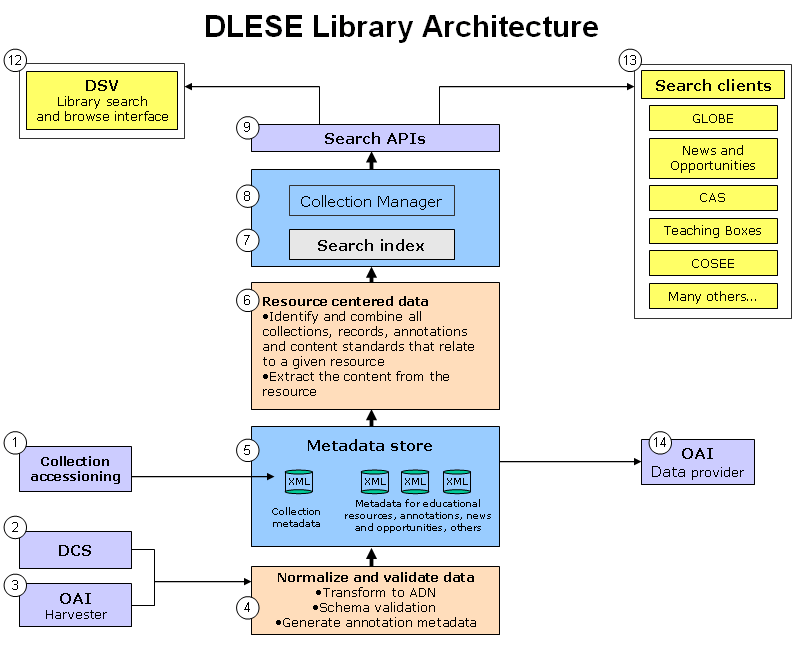

DLESE
Architecture Overview
Version 2.5
This architecture describes the DLESE library v2.5 architecture
Description
This page provides a summary of the overall architecture of the DLESE library v2.5, released in May 2007. Each of the major components of the library is described in brief and links are provided that lead to more detailed information. The diagram here shows the flow of library resources from record import, quality assurance, indexing to search and the numbered items, corresponding to the major components of the library, are described and summarized below.

1. Collection accessioning
- Collections are accessioned into the library, following the collection accessioning process. A collection-level metadata editor is used to create new collection-level metadata records and edit existing records. This is currently done using XML Spy, and will eventually be managed using the DLESE Collection System (DCS) tool (see below).
- Collection builders submit collection information via a simple web form at http://www.dlese.org.
- Data are reviewed for accuracy and policy adherence and then DPC staff create/edit collection-level metadata in the XML editor.
- Collection-level metadata is immediately available to the Collection Manager, and the collection begins the QA process. Records for the collection are ingested into a preaccession portion of the library for inspection by library QA staff and collection builders only and not yet made publically available.
- Once a collection is approved, its metadata is brought to the library and enabled using the Collection Manager to become publically available to users and the search APIs.
- Assumptions and policies
- Inclusion of collection is authorized by Collection Approval Committee.
2. DCS used for internal collection building and QA
- The DLESE Collection System (DCS) is used to create new library records and perform QA over the existing library catalog. Specific collections that are managed using the DCS include the DLESE Community Collection (DCC), the DWEL collection, community news and opportunities postings, and various annotation collections.
- Allows creating and editing of individual records.
- Provides search and discovery tools to support certain QA tasks over the collection.
- QA administrator can include/exclude records from discovery in the library by changing their status via the DCS UI.
- Only records with the proper status get exported to the metadata store (#5)
- Assumptions and policies
- All resources will have a URL at this time. Off-line resources are not yet supported. DLESE Scope statement indicates that on-line resources are favored for the collection.
3. OAI harvester - Import external collections and annotation metadata
- Records from external collection builders are imported in XML format using the Open Archives Initiative Protocol for Metadata Harvesting (OAI-PMH) as well as other means such as e-mail and ftp. External collection builders may or may not be using an instance of the DCS to catalog.
- Configuration is handled by DPC staff in the DLESE OAI harvester application's administration UI.
- Configuration options include: name of harvested collection, OAI BASE_URL and set (optional) of the collection, location where files will be stored after harvesting, harvest interval.
- External collections are currently being harvested via OAI in ADN format (DWEL, AVC, SERC collections, COMET, NASA, others) and annotation format (CRS).
- Assumptions and policies
- Collection builder has performed a preliminary check for record validity. Collection builders who have installed the DLESE OAI software v2.0 or greater will be able to use the software to perform this basic validation prior to serving.
4. Normalize and validate data
Prior to arriving in the Metadata store (#5), records are normalized, validated and checked for integrity. This pre-processing step includes transformation of records to ADN from other formats, additional metadata clean-up, schema validation, checking for improper characters in XML, and generation of appropriate annotation metadata.
- Records that arrive in non-ADN format are transformed and normalized to ADN after they are harvested and stored to a global metadata store (#5) that is accessible to other processes.
- Records that arrive in ADN format are stored directly in the global metadata store (#5) after passing schema validation and other integrity checks.
- ADN records are also checked for duplicate fields (not caught by schema validation) and cleaned up if necessary.
- Report is generated listing files that could not be transformed or validated and the reason for the error.
- Check for parsing character encoding errors.
- Check for validation errors in both input and output XML.
- Clean up metadata if necessary (delete duplicate vocab entries, etc.)
- Resource availability is checked using the IDMapper service.
- Report is available for viewing or for use in other processes.
- Assumptions and policies
- DPC staff inform and provide support to collection builders whose records have failed to transform or validate successfully.
5. Metadata store
The XML metadata store holds the metadata for all items in the library.
- Formats include:
- ADN
- Collection metadata
- News and Opportunities
- Annotation metadata
- Others as needed
- Collection records are saved to the data store via the Collection-level metadata editor (#1)
- Assumptions and policies
- All data has been normalized, validated and has passed basic integrity checks.
6. Resource centered data
Prior to and during the indexing process, records are grouped based on a resouce-centric model. This is done by identifying all collections, records, annotations, content in the resource, and content standards that relate to a given resource. This relationship data is then used by the index to create a single index entry for each resource that combines and exposes all these into one searchable item.
- The Resource-to-ID mapper service is used in this step to perform these primary functions:
- Identify records within a single collection that have the same primary URL, which is a quality error.
- Provides policy enforcement over external collections.
- Map each unique resource to all records that exist for the resource across collections.
- Report of URLs and associated IDs available to other processes, such as index.
- Link checker verifies URLs within each record for correctness and HTTP errors.
- Report on link problems generated detailing bad links over time and e-mailed to DPC staff.
- Report available to other processes, such as the DDS.
- Store the content of the resource so it may be accessed by the index.
- The basic task:
- Associate all records that seem to describe the same resource. This task involves:
- Checking the similarity of the URLs themselves
- Hashing algorithm is used for content similarity checks
- Assumptions and Policies
- Duplicate URL's within a collection are not allowed and will not be accessioned. No formal policy for external collections states this, but this had been the policy for DLESE Broad thus far.
7. Search index
- An index of library records is generated on a nightly basis.
- The index and searching components of the library are built using Lucene.
- A resource-centric index is generated from the metadata store, the content of the resources and from information about the relationships among the records that identified in step 6.
- Index contains entries for the educational resources, news and opportunities, annotations, collections, and other records associated with the library.
- Searches performed over the index use a rich Information Retrieval search query language referred to here as the DLESE Query Language (DQL).
- This query language is the result of the standard Lucene query language operating over the specific DLESE fields created in the index.
- When searched, the index returns a list of results ordered by rank. Rank may be controlled by the searcher by applying weights to individual fields. For example if the search term exists in the title of the record this may be assigned more weight than if the term exists only in the description field. The public Search APIs implement a default boosting to provide higher weight for users searches that match terms in the title and description fields of the resources over other parts of the indexed text.
- Assumptions and policies
- Date and accession information in an item level record is not used or amended by DLESE. Accessioning dates and status as they pertain to DLESE are maintained in a separate database maintained by the DPC.
8. Collection manager
- A collection management system provides an interface for DPC staff to inspect the collections and perform basic administrative functions, such as:
- Enable or disable collections from being discoverable in the DDS and search web service.
- Issue unlimited search queries over the collection(s).
- Search and inspect errors that were found in the resources during steps #4 and #6.
- Search and display those resources that have duplicate records.
- Search and display resources that have been annotated.
- Perform a visual spot check and QA of a collection’s item level metadata.
- Assumptions and policies
- A collection-level record exists for each discoverable collection.
9. Search APIs
The library repository search is exposed through two public APIs: The DLESE Search Web Service and the the JavaScript search service. These APIs are used to create user interfaces and other view applications to access the library, and to conduct research related to the content in the library.
- The records returned via these services are ordered with the most relevant resources at the top. Relevancy is weighed so that resources that contain the search terms in their title, are cataloged multiple times, meet a higher review standard or contain matching terms in their description are given the highest rank.
- Clients that use the service APIs can control what is searched and returned and can set custom parameters for the relevancy ranking of the search results.
- Results are returned one resource per entry, which may contain metadata from multiple resources, collections and annotations.
- If multiple records exist for a resource, these are combined and returned in a response entry for the resources
- Of the duplicates, the record with the highest rank based on the user's query will be the one displayed in the brief description.
- The DLESE Search Web Service (DDSWS) provides a REST Web service interface to DLESE's metadata and search functionality.
- The service is used by internal and external developers to provide search interfaces to the library.
- Developers may use the service to create a variety of custom search interfaces, access the data in the DLESE repository, or conduct research about the library repository and it's contents
- The JavaScript search service provides a JavaScript interface to DLESE's search functionality. This service and framework allows DLESE search to be inserted into a web page using simply HTML, JavaScript and CSS, making custom DLESE search widely accessible for use by web page developers. Use cases for the service include educational design, custom search pages for targeted audiences and other applications where the dynamic content of the library may be useful.
Assumptions and policies
- Extra weight will be applied to reviewed items when ranking, if possible. There is no policy to support this at this time.
- Only one entry will be displayed for resources that have multiple records from separate collections associated with it.
- Branding information identifying the contributing collection will be visible with each record returned.
- Annotation information will be linked from results.
- In keeping with DLESE privacy policy, contact information for record creators will not be displayed in service responses.
12. DSV - Library search and browse interface
Users who visit the library at www.dlese.org interact with the DLESE Search View (DSV) application. The DSV is a client application built using the DLESE Search Web Service and provides the primary user interface for searching and browsing the resources, collections, and annotations in the library.
12. Search clients
- In addition to the DSV, a variety of additional search clients are built using DLESE's Search Web Service and JavaScript Search Service to provide custom, contextualized user interfaces over the library collections, or are used for data analysis or research purposes. Clients that access the search web service are implemented using application software such as Tomcat / JSP, PHP, Java or other environments that are able to communicate using web service protocols and parse XML data for display or data analysis purposes. Clients that access the JavaScript service are implemented using HTML, JavaScript and CSS and are available for access using standard web browsers.
Some example clients:
- The GLOBE project uses the search web service to provide access to DLESE resources from within the Teacher's Guide portion of their site.
- The Center for Ocean Science Education Excellence (COSEE) uses the search web service to provide a custom search interface for their web site visitors.
- The news and opportunities portion of the DLESE web site uses the search web service to provide a search interface for community-related news and opportunities.
- The Creator Acknowledgement System (CAS) provides a search interface that uses the search web service to display resources in the library that are attributed to an individual or institution. The CAS also uses the web service internally to determine which resources are new to the library and who needs to be e-mailed to notify them that their resources have been included in the library.
- Several other clients have been built that use the service such as the Strand Map Service, the Idea Keeper, and a number of additional search pages for DLESE partners.
13. OAI data provider - Export via Open Archives Initiative Protocol for Metadata Harvesting (OAI-PMH)
- External partners wishing to gain full access to the DLESE data store may harvest records using the OAI-PMH in all available DLESE formats.
- Dublin Core format made available for export to external OAI-complient repositories. The qualified NSDL Dublin Core format is made available for the NSDL.
- Assumptions and policies
- Records from external collections will only be made available for those collections who wish DLESE to proxy their data.
- IP and privacy policies for each collection apply to harvested metadata.
- In keeping with DLESE privacy policy, contact information for record creators will not distributed.
- Will all items in data store be harvestable via OAI or only those discoverable in DLESE .. Policy decision needed here.
Last updated: May, 2007
Author: John Weatherley